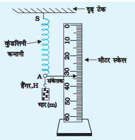
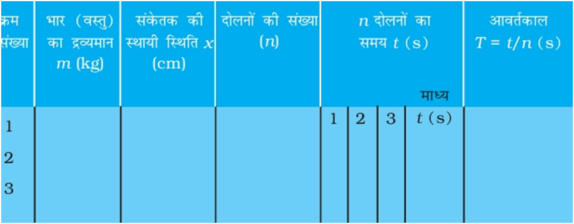
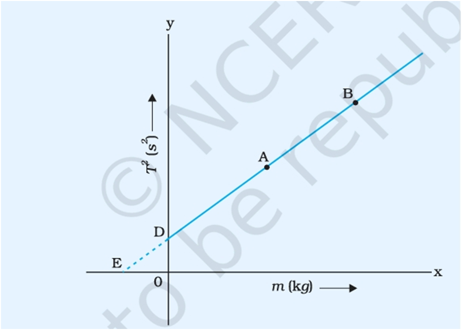

प्रक्रिया ( वास्तविक प्रयोग )

1 . चित्र में दिखाए अनुसार किसी दृढ़ टेक से एक कुंडलिनी कमानी SA जिसके मुक्त सिरे A से एक संकेतक तथा हैंगर जुड़ा हो, निलंबित कीजिए।
2. एक मापक पैमाने (स्केल) को कमानी से सटाकर ऊर्ध्वाधर व्यवस्थित कीजिए। यह ध्यान रखिए कि संकेतक को स्केल को स्पर्श किए बिना स्केल के ऊपर मुक्त गति करनी चाहिए।
3. स्केल का अल्पतमांक ज्ञात कीजिए। यह प्रायः 1 mm या 0.1 cm होता है।
4. विराम घड़ी की कार्य विधि का परीक्षण कीजिए और इसका अल्पतमांक ज्ञात कीजिए।
5. m, द्रव्यमान की वस्तु (भार) अथवा खाँचेदार बाट को धीरे से हैंगर से लटकाइए। संकेतक को रुकने तक प्रतीक्षा कीजिए। यह दिए गए भार के लिए साम्यावस्था की स्थिति है। अब भार को थोड़ा-सा नीचे की ओरखींचकर धीमे से छोड़ दीजिए ताकि यह ऊर्ध्वाधर दोलन कर सके। संकेतक P की स्केल पर स्थायी स्थिति को ही संदर्भ या माध्य स्थिति मानना चाहिए। जैसे ही संकेतक P माध्य स्थिति को (मान लीजिए नीचे से ऊपर की ओर) पार करे तुरंत ही विराम घड़ी को आरंभकर दीजिए। उसी क्षण से दोलनों की संख्या गिनना आरंभ कीजिए।
6. जैसे-जैसे समान दिशा में संकेतक माध्य स्थिति को पार करता रहे, दोलनों का गिनना 1,2,3,.... n जारी रखिए। किसी भी गिनती n (जैसे 5 से 10 तक) के दोलनों के पूर्ण होते ही विराम घड़ी बंद कर दीजिए। विराम घड़ी का डायल पढ़कर भार द्वारा पूर्ण किए n दोलनों का कुल समय (t) नोट कीजिए।
7. इतनी संख्या (n) के दोलन करने का कुल समय कम-से-कम तीन बार अवश्य ज्ञात कीजिए। इन पाठ्यांकों का माध्य समय (t1) ज्ञात कीजिए। इसके पश्चात एक दोलन का समय अर्थात दोलन कर रही कुंडलिनी कमानी (भार सहित) का आवर्तकालT₁ (= t₁/n) परिकलित कीजिए।
8. दो अन्य खांचेदार बाट के लिए चरण 5 एवं 6 दोहराइए।
9. प्रत्येक भार के लिए दोलन का आवर्तकाल T=t/n ज्ञात कीजिए तथा अपने प्रेक्षणों को सारणी में लिखिए।
10. प्रत्येक भार के लिए कमानी स्थिरांकK₁. K₂ तथा K3 के मान परिकलित कीजिए। K₁,K₂ तथा K3 के मानों का माध्य ज्ञात करके दी गई कुंडलिनी कमानी का माध्य कमानी स्थिरांक K ज्ञात कीजिए।
11. कमानी स्थिरांक K का मान, Y अक्ष के अनुदिश T2 तथा X अक्ष के अनुदिश m लेकर T2 तथा m का ग्राफ खींचकर भी ज्ञात किया जा सकता है।
[टिप्पणी- दोलन n की संख्या अधिक-से- अधिक ली जानी चाहिए ताकि समय मापन की को कम-से-कम किया जा सके। दोलनों की संख्या n निर्धारित करने की एक विधि विराम घड़ी के अल्पतमांक पर आधारित है। यदि विराम घड़ी का अल्पतमांक 0.1 s हो तो मापन की त्रुटि को 1% की सीमा में रखने के लिए लघुतम समय 10 s होना चाहिए। अतः n का निर्धारण उन दोलनों की संख्या के आधार पर किया जाना चाहिए। जितने दोलन द्रव्यमान द्वारा लगभग 10 s में पूर्ण किए जाते हैं।
प्रेक्षण सारणी ( वास्तविक प्रयोग ):
ऊर्ध्वाधर स्केल का अल्पतमांक ...mm...cm
विराम घड़ी का अल्पतमांक = ...sec
भार । का द्रव्यमान m1 = ...g... Kg
भार 2 का द्रव्यमान m2 = ...g = ...kg
भार 3 का द्रव्यमान m3 = ...g = ...kg

परिकलन एवं परिणाम ( वास्तविक प्रयोग ):

K₁=4π²(m1-m2)/(T12-T22):
K2=4π²(m2-m3)/(T22-T32):
K3=4π²(m1-m3)/(T12-T32):
K₁, K2 तथा K3, के मानों को परिकलित करके दी गई कुंडलिनी कमानी के कमानी स्थिरांक का माध्य मान ज्ञात कीजिए। परिणाम को उचित मानकों एवं सार्थक अंकों में व्यक्त कीजिए।
कमानी स्थिरांक तथा कमानी के प्रभावी द्रव्यमान का मान T2 तथा m के मध्य ग्राफ खींचकर भी ज्ञात किया जा सकता है। इस ग्राफ़ का अनुमानित रूप सरल रेखीय है जैसा कि चित्रमें दिखाया गया है। कमानी स्थिरांक K (=4π²/m’) का मान सरल रेखीय ग्राफ की प्रवणता m’ द्वारा परिकलित किया जा सकता है। सरल रेखीय ग्राफ के y अक्ष पर अंतः खंड c तथा प्रवणता m’ के ज्ञात मानों का उपयोग करके कुंडलिनी कमानी के प्रभावी द्रव्यमान mo (=c/m’) का परिकलन किया जा सकता है। कुंडलिनी कमाने के प्रभावी मान mo (=-c’) की सरल रेखीय ग्राफ़ द्वारा x अक्ष पर बनाये अंतः खंड (c’) के मान से सीधे ही गणना भी की जा सकती है।
परिणाम
दी गई कुंडलिनी कमानी का कमानी स्थिरांक ...N/m.
कुंडलिनी कमानी का प्रभावी द्रव्यमान ...g = ...Kg
K के मान में त्रुटि का परिकलन ग्राफ़ की प्रवणता में त्रुटि के द्वारा किया जा सकता है।
∆K/K = ∆ प्रवणता/ प्रवणता
प्रभावी द्रव्यमान mo में त्रुटि ग्राफ के अंतः खंड तथा प्रवणता में त्रुटि के तुल्य होगा। परिणाम को त्रुटि सहित व्यक्त कीजिए।
कार्यविधि ( सिमुलेशन ) - स्थैतिक विधि
१ . सर्वप्रथम सिमुलेशन को Pause कीजिये।
२ . स्लाइड की सहायता से लोड का भार सेट कीजिये।
३ . अब सिमुलेशन को Play करिये। निकाय (स्प्रिंग-लोड) अपनी माध्य स्थिति के दोनों ओर ऊर्ध्वाधर दोलन करने लगता है।
४ . थोड़ी प्रतीक्षा के बाद जब संकेतक अपनी माध्य स्थिति पर रुक जाता है तब,पैनल की सहायता से संकेतक की सटीक स्थिति पता की जा सकती है।
५ . संकेतक की माध्य स्थिति का मान (Y ) तथा लोड के द्रव्यमान का मान ( m ) सारणी में नोट कीजिये।
६ . सिमुलेशन को पुनः Pause करके Reset करिये।
७ . लोड के मान को पुनः सेट करके कार्यविधि को चरण २ से चरण ६ तक दोहराइये।
८ . सारणी तथा ग्राफ के माध्यम से स्प्रिंग नियतांक (K) का मान ज्ञात कीजिये।
सारणी ( सिमुलेशन ) :
| क्र. |
लोड का द्रव्यमान (m ) Kg |
भार F =m *g |
संकेतांक का स्केल के ऊपर माध्य पाठ्यांक (Y1 ) (भार चढ़ाते समय) |
संकेतांक का स्केल के ऊपर माध्य पाठ्यांक (Y2 ) (भार उतारते समय) |
माध्य पाठ्यांक Y = (Y1 +Y2)/2 |
||
| cm |
m |
cm | m | ||||
| 1 | |||||||
| 2 | |||||||
| 3 | |||||||
| 4 | |||||||
ग्राफ तथा परिणाम :
संकेतांक के पाठ्यांक के माध्य मानों को X-अक्ष पर तथा लोड भार ( F ) के मानों को Y-अक्ष पर लेकर ग्राफ बनाइये। इस ग्राफ की प्रवणता, स्प्रिंग के स्थिरांक (K) के बराबर होगी।
कार्यविधि (सिमुलेशन) - गतिक विधि
१. सर्वप्रथम सिमुलेशन को Pause कीजिये।
२ . अब लोड के द्रव्यमान को सेट कीजिये।
३ . संकेतक की स्केल पर स्थिति को ही संदर्भ या माध्य स्थिति मानना चाहिए।
४ . सिमुलेशन को Play कीजिये। संकेतक ऊर्ध्वाधर दोलन करने लगता है। संकेतक माध्य स्थिति को (मान लीजिए नीचे से ऊपर की ओर) पार करे तुरंत ही विराम घड़ी को आरंभ कर दीजिए। उसी क्षण से दोलनों की संख्या गिनना आरंभ कीजिए।
6. जैसे-जैसे समान दिशा में संकेतक माध्य स्थिति को पार करता रहे, दोलनों का गिनना 1,2,3,.... n जारी रखिए। किसी भी गिनती n (जैसे 5 से 10 तक) के दोलनों के पूर्ण होते ही विराम घड़ी बंद कर दीजिए। विराम घड़ी का डायल पढ़कर संकेतांक द्वारा पूर्ण किए n दोलनों का कुल समय (t) नोट कीजिए।
७ . इतनी संख्या (n) के दोलन करने का कुल समय कम-से-कम तीन बार अवश्य ज्ञात कीजिए। इन पाठ्यांकों का माध्य समय (t1) ज्ञात कीजिए। इसके पश्चात एक दोलन का समय अर्थात दोलन कर रही कुंडलिनी कमानी (भार सहित) का आवर्तकाल T₁ (= t₁/n) परिकलित कीजिए।
८ . पैनल में दर्शाये गए आवर्तकाल (T) के मान से पुष्टि कीजिये।
८ . सिमुलेशन को Pause करिये तथा भार को पुनः सेट करिये। प्रक्रिया को पद ४ से ७ तक पुनः दोहराइये।
९ . अब सारणी एवं ग्राफ के द्वारा स्प्रिंग नियतांक का मान ज्ञात कीजिए।
सारणी :
| क्र. |
द्रव्यमान |
भार | संकेतक की माध्य स्थति | n दोलनों में लगा समय | आवर्तकाल (T) | T2 |
| Kg | N | cm | "t" sec. | "=t /n" sec. | ||
| १ . | ||||||
| २ . | ||||||
| ३ . | ||||||
| ४ . |
ग्राफ : कमानी स्थिरांक K का मान, Y अक्ष के अनुदिश T2 तथा X अक्ष के अनुदिश m लेकर T2 तथा m का ग्राफ खींचकर भी ज्ञात किया जा सकता है। इस ग्राफ़ का अनुमानित रूप सरल रेखीय है जैसा कि चित्रमें दिखाया गया है। कमानी स्थिरांक K (=4π²/m’) का मान सरल रेखीय ग्राफ की प्रवणता m’ द्वारा परिकलित किया जा सकता है। सरल रेखीय ग्राफ के y अक्ष पर अंतः खंड c तथा प्रवणता m’ के ज्ञात मानों का उपयोग करके कुंडलिनी कमानी के प्रभावी द्रव्यमान mo (=c/m’) का परिकलन किया जा सकता है। कुंडलिनी कमाने के प्रभावी मान mo (=-c’) की सरल रेखीय ग्राफ़ द्वारा x अक्ष पर बनाये अंतः खंड (c’) के मान से सीधे ही गणना भी की जा सकती है।